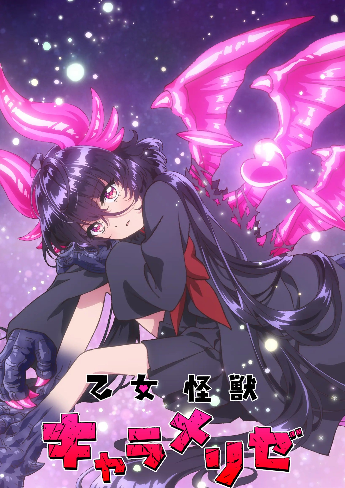

题材交叉
既在「高分恋爱动漫推荐」，也在「高分校园动漫推荐」。
 6.6
6.6「棱镜恋曲」（2026）是一部OVA/WEB，由中澤一登执导，制作WIT STUDIO，类型包括恋爱、少女、校园，评分6.6，在本站出现在6份片单中，例如2026年新番总表、高分OVA与WEB动画、高分恋爱动漫推荐。页面只做片单对照，不提供播放。故事发生在20世纪初的伦敦。一条院莉莉是一位来自日本的少女，她为了实现成为画家的梦想远渡重洋来到英国，转入伦敦的圣托马斯美术学院。尽管第一次踏出国门，前往梦想中的美术学院留学的经历让莉莉兴奋不已，然而她却没法放松警惕，因为父母和她有约在先：。
按共享片单数排序，用来找和「棱镜恋曲」一起出现的高分动漫。
 5.5
5.5 5.5
5.5 6.7
6.7 8.1
8.1
6.4 6.8
6.8